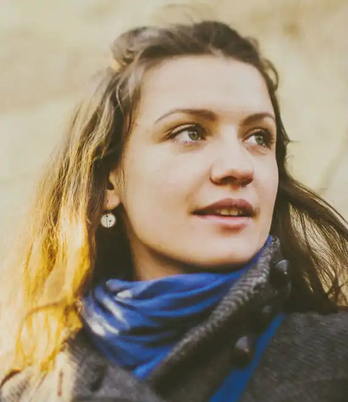
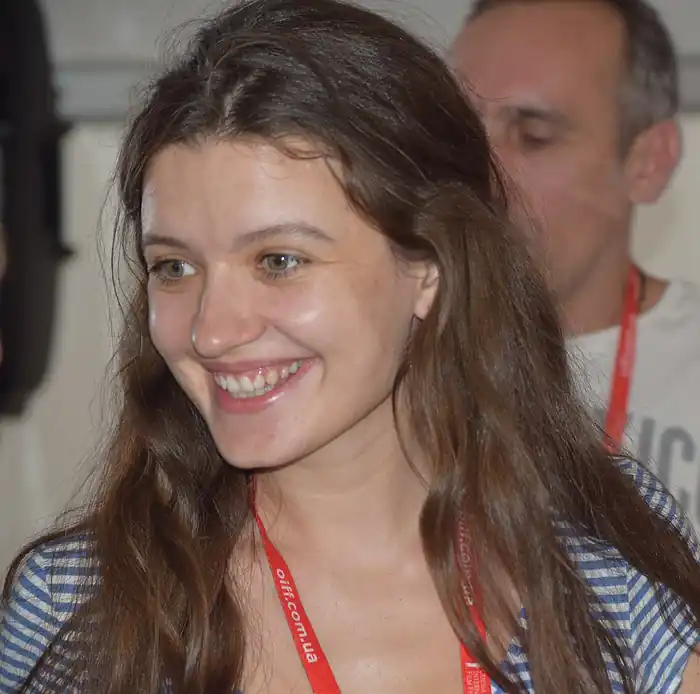
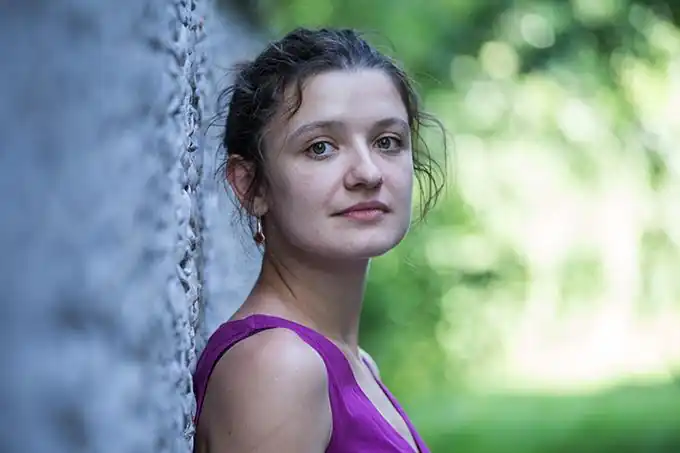

Ірина Андріївна Цілик (нар. 18 листопада 1982, Київ) — українська письменниця (поетеса, прозаїк), режисер.
Народилася в Києві. 2004 року закінчила Київський національний університет театру, кінематографу і телебачення ім. Карпенка-Карого з відзнакою. Працює режисеркою в галузі кіновиробництва.
Авторка кількох збірок поезії, прози та дитячих видань. Учасниця численних літературних фестивалів і культурних заходів ("Poesiefestival Berlin" 2017, Віденський книжковий ярмарок 2017, "Лейпцизький книжковий ярмарок" 2017, "Франкфуртський книжковий ярмарок" 2016, "Lyrik für Alle" (конференція Babelsprech, Зальцбург 2016), "Meridian Czernowitz" 2015-2016, Вільнюський книжковий ярмарок 2016, "Місяць авторських читань" (Чехія, Словаччина 2016), "Премія Вілениці" (Словенія 2008) та інш). Окремі твори перекладалися німецькою, англійською, польською, французькою, чеською, литовською, румунською, каталанською мовами. Окрім фахової та літературної діяльності, співпрацює також з різними українськими виконавцями і музичними гуртами як поетка-пісенниця. Авторка слів пісні "Повертайся живим" (у виконанні гуртів "Сестри Тельнюк" та "Коzак System"). Чоловік Ірини Цілик — письменник Артем Чех. Син — Андрій (2010 р. н.). Поезія Глибина різкості, 2016 Ці, 2007 Проза Червоні на чорному сліди: збірка оповідань, 2015 Родимки: збірка оповідань, 2012 Післявчора: повість, 2008 Видання для дітей МІСТОрія однієї дружби: пригодницька повість для дітей молодшого шкільного віку, 2016 Таке цікаве життя: видання для дошкільнят, 2015